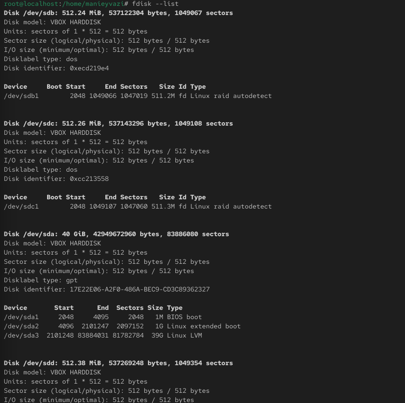
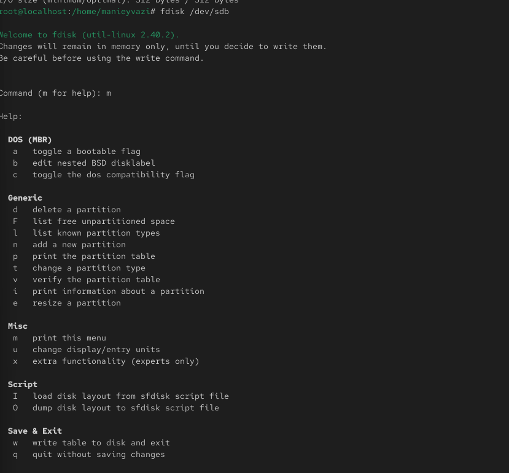
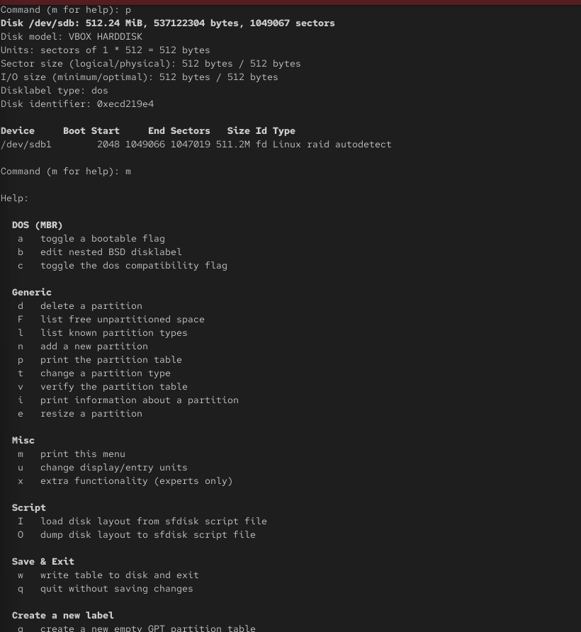
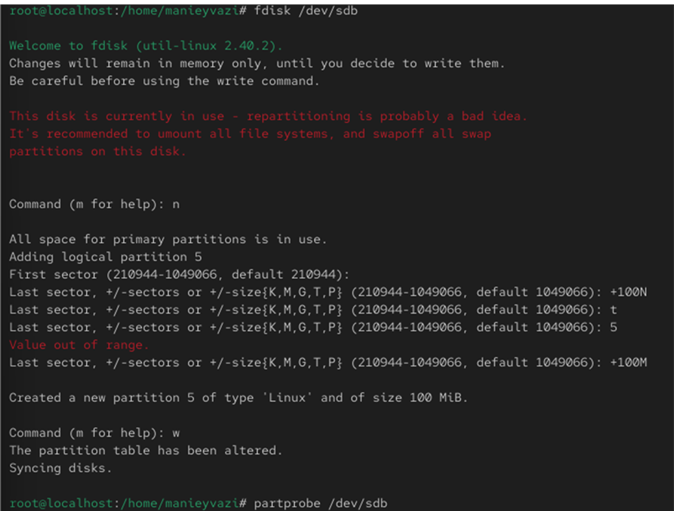
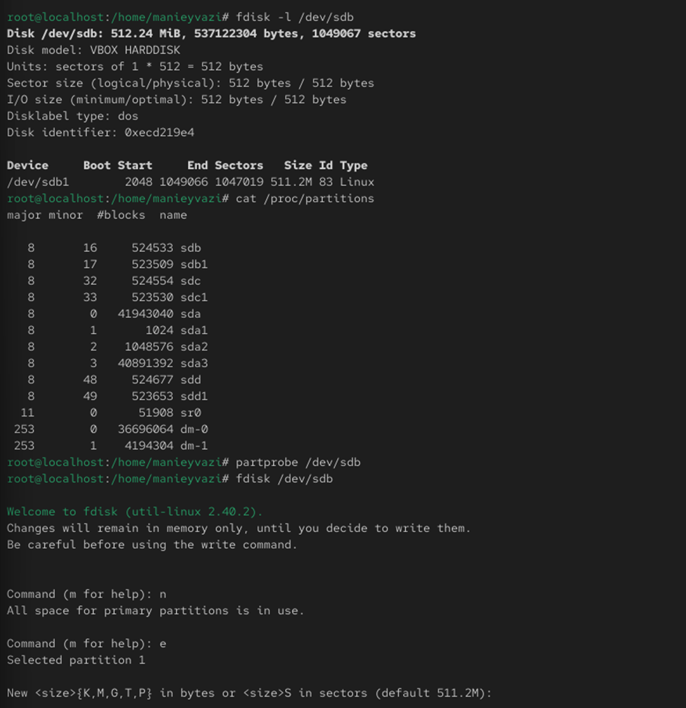
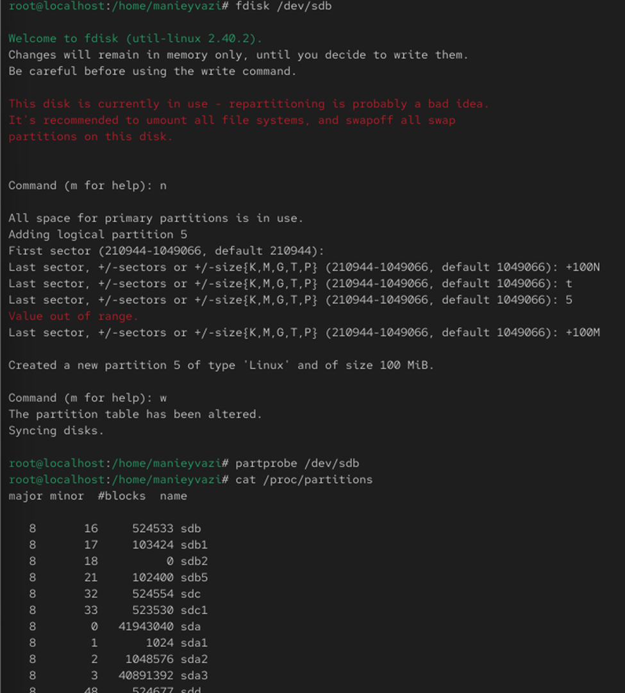
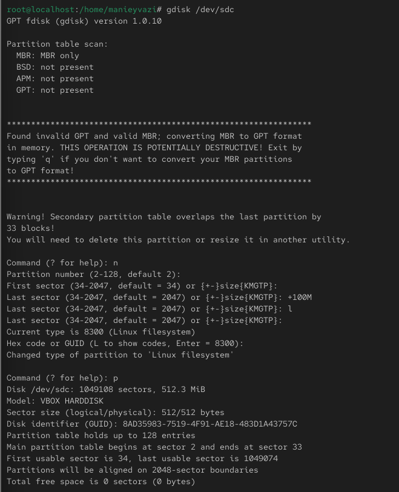

Цели и задачи работы
Цель лабораторной работы
Получить практические навыки разметки дисков (MBR и GPT), создания
файловых систем, настройки раздела подкачки и монтирования файловых
систем (ручного и автоматического) в Linux.
Процесс выполнения
лабораторной работы
Проверка доступных устройств

Рис. 1 — Вывод команды fdisk -l
Обновление таблицы разделов
ядра
-.

Рис. 2 — Проверка таблицы разделов и обновление настроек
ядра
Форматирование и активация
swap

Рис. 3 — Создание и активация swap-раздела
Проверка автоматического
монтирования
-.

Рис. 4 — Проверка автоматического монтирования
Самостоятельная
часть: создание GPT-разделов
-.

Рис. 5 — Создание двух GPT-разделов
Самостоятельная часть: ext4 и
swap
-.

Рис. 6 — Создание ext4 и swap
Самостоятельная
часть: проверка монтирования и swap
-.

Рис. 7 — Проверка монтирования и swap
Выводы по проделанной работе
Вывод
В ходе лабораторной работы были освоены:
- разметка дисков с использованием таблиц разделов MBR и GPT (создание
основных, расширенных и логических разделов);
- создание и настройка файловых систем XFS и EXT4;
- выделение и активация раздела подкачки (swap);
- ручное монтирование разделов и работа с точками монтирования;
- настройка автоматического монтирования разделов через файл
/etc/fstab и проверка корректности конфигурации. Полученные навыки
закрепили понимание принципов работы с блочными устройствами и файловыми
системами в Linux и являются базой для дальнейшей администрирования
дисковой подсистемы.